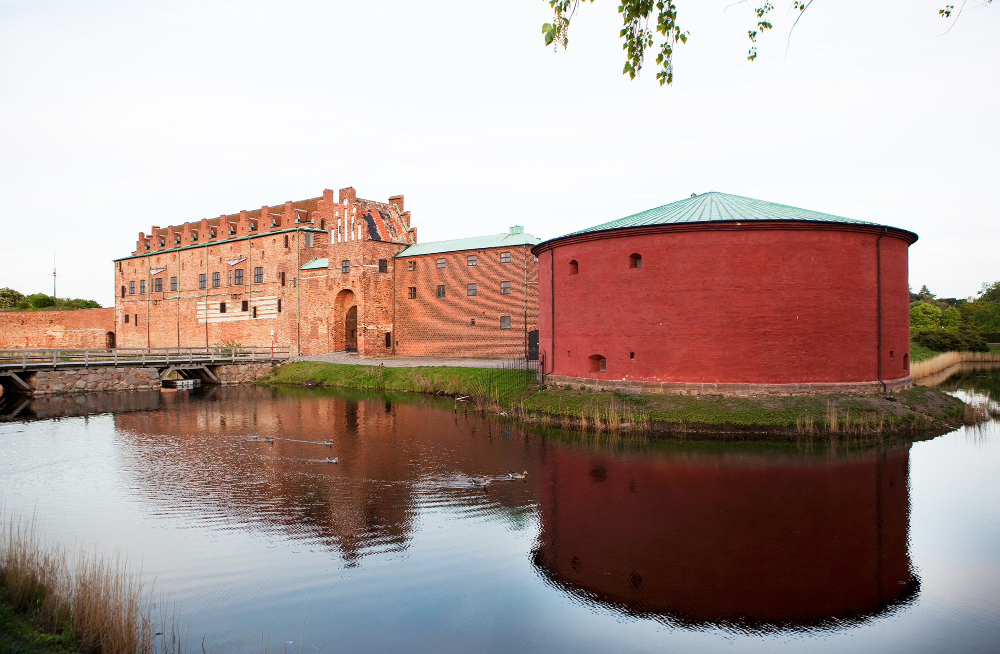

Populära platser i malmö

Turning Torso
Skandinaviens högsta byggnad och Malmös mest ikoniska landmärke.

Malmöhus Slott
Nordens äldsta bevarade renässansslott med museum och utställningar.

Folkets Park
Sveriges äldsta folkpark – perfekt för promenader, aktiviteter och familjer.